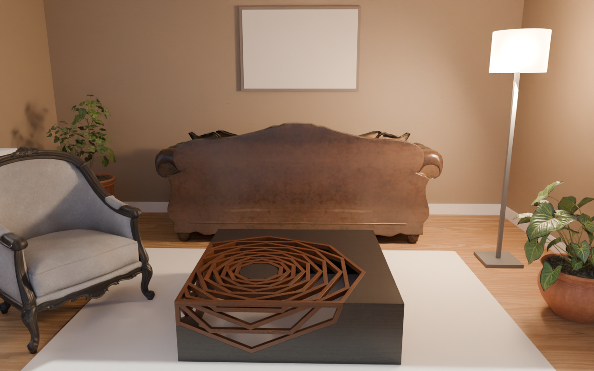

A brain + a judge steering a photoreal Blender interior (real CC0 furniture, PBR, HDRI daylight)
A photoreal living-room corner for a furniture catalogue hero shot: warm, calm, inviting, one clear focal composition (sofa + coffee table), natural daylight through a window plus one warm practical light, Scandinavian/Japandi taste, no clutter.
score 0.325 → 0.448 (+0.123) · best round r3
FIRST PLAN · r0

brain 0.477 · judge 0.20 · Place areas (PPA/RSC) dominate: the background scene swallows the message / Face areas (FFA/STS) are silent: no human or gaze cue
BEST · r3

brain 0.616 · judge 0.31 · Reward circuit (OFC/vmPFC) is on but the appeal head is average: value is felt but what is good isn't legible / Object-shape (LO) and motion (MT) areas are low: a text-first screen with no clear object silhouette
Per round
| r | render | score | brain | judge | kept | why / objects |
|---|
| r0 | | 0.325 | 0.477 | 0.20
real 0.22 · light 0.22 · art 0.33 | ✓ | first plan
sofa_03, modern_coffee_table_02, ArmChair_01, potted_plant_01, potted_plant_02 |
| r1 |  | 0.419 | 0.523 | 0.33
real 0.33 · light 0.22 · art 0.56 | ✓ | Flipped sofa to face camera, lowered camera to 120cm with tighter 35mm hero framing, and removed armchair plus second plant to leave sofa+coffee table as the single clutter-free focal group.
sofa_03, modern_coffee_table_02, potted_plant_01 |
| r2 |  | 0.438 | 0.594 | 0.31
real 0.33 · light 0.22 · art 0.44 | ✓ | Replaced heavy sofa_03 with low-profile sofa_02 plus lighter rectangular table and added angled armchair for lived-in second discovery while warming sunlight for calm Japandi desirability.
sofa_02, modern_coffee_table_01, potted_plant_01, modern_arm_chair_01 |
| r3 | | 0.448 | 0.616 | 0.31
real 0.22 · light 0.22 · art 0.56 | ✓ | Removed cropped armchair for single focal group, centered 120cm camera on sofa-table-art axis, and extended rug under sofa to anchor composition.
sofa_02, modern_coffee_table_01, potted_plant_01 |
| r4 |  | 0.375 | 0.453 | 0.31
real 0.22 · light 0.33 · art 0.44 | · | Dimmed practical to 2700K/40W with sheer curtain and softer daylight for warm Japandi glow, angled camera for diagonal focal composition, and pulled rug/table under sofa for one clear silhouette.
sofa_02, modern_coffee_table_01, potted_plant_01 |
| r5 |  | 0.411 | 0.559 | 0.29
real 0.22 · light 0.22 · art 0.44 | · | Lightened to oatmeal Japandi palette with hinoki floor, moved left window forward for soft directional daylight patch, warmed practical/area to 2700K at 60-80W without curtain, and added tall side table as second discovery while keeping single sofa-table focal group.
sofa_02, modern_coffee_table_01, potted_plant_01 |
| r6 |  | 0.418 | 0.549 | 0.31
real 0.33 · light 0.22 · art 0.44 | · | Warmed practical to 2700K/60W, added side table as second discovery, shifted camera off-axis for diagonal hero silhouette, and warmed sun to 4300K for calm Japandi daylight.
sofa_02, modern_coffee_table_01, potted_plant_01, side_table_01 |
| r7 |  | 0.418 | 0.603 | 0.27
real 0.22 · light 0.22 · art 0.33 | · | Swapped to round table for dominant silhouette, added lantern as second discovery, widened centered lens to include window daylight, and softened warm practical to 2850K/50W with lower ambient to keep Japandi focal legibility.
sofa_02, coffee_table_round_01, potted_plant_01, wooden_lantern_01 |
Best spec
{
"room": {
"w": 5.0,
"d": 5.0,
"h": 2.8,
"floor_tex": "oak_veneer_01",
"wall_tex": "beige_wall_001",
"wall_color": "#E9E1D3",
"ceiling_color": "#F5F3EE",
"baseboard": true,
"floor_scale": 1.0,
"wall_scale": 1.0
},
"window": {
"wall": "left",
"x": 0.4,
"z": 1.6,
"w": 1.8,
"h": 1.4,
"frame_color": "#FFFFFF",
"curtain_color": null,
"sill": true
},
"world": {
"hdri": "kloofendal_48d_partly_cloudy_puresky",
"strength": 1.0,
"rotation_deg": 90
},
"sun": {
"strength": 4.5,
"elevation_deg": 38,
"azimuth_deg": 255,
"kelvin": 4800
},
"lights": [
{
"type": "area",
"pos": [
1.9,
1.1,
1.45
],
"size": 0.4,
"power": 100,
"kelvin": 3000
}
],
"practical": {
"lamp_object_id": "floor_lamp",
"power": 80,
"kelvin": 3000
},
"objects": [
{
"asset": "sofa_02",
"pos": [
0.2,
1.93
],
"rot_deg": 0,
"scale": 1.0
},
{
"asset": "modern_coffee_table_01",
"pos": [
0.2,
0.3
],
"rot_deg": 0,
"scale": 1.0
},
{
"asset": "potted_plant_01",
"pos": [
-1.9,
1.85
],
"rot_deg": 0,
"scale": 1.0
}
],
"rug": {
"x": 0.2,
"y": 0.9,
"w": 2.8,
"d": 2.0,
"color": "#D9CFC0"
},
"floor_lamp": {
"x": 1.9,
"y": 1.1,
"height": 1.6,
"shade_color": "#F5E8D5",
"kelvin": 3000,
"power": 80
},
"art": {
"wall": "back",
"x": 0.2,
"z": 1.8,
"w": 1.2,
"h": 0.8,
"color": "#CFC5B5",
"frame_color": "#3A2E26"
},
"camera": {
"pos": [
0.2,
-2.6,
1.2
],
"look_at": [
0.2,
1.5,
0.7
],
"lens_mm": 35,
"fstop": 5.6,
"focus_object": "sofa_02"
},
"render": {
"samples": 64,
"w": 1280,
"h": 800,
"exposure": 0.4,
"look": "medium"
}
}
Assets: Poly Haven (CC0). Renderer: Blender Blender Cycles, OIDN denoise, AgX.